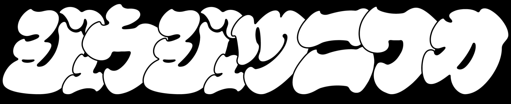

柔術・グラップリング・総合格闘技の世界で起きていること、テクニック、そして選手たちのキャラやドラマまでを、ゆるく語るトーク番組
EPISODES
PERSONALITY

Sera
国内外のグラップリングシーンで実績を残し続ける現役ファイター
Matsui
格闘技は一旦休憩中。柔術の帯でいうとまだこれからな立場
OTAYORI
番組への感想、質問、リクエストなどお待ちしています。
お便りを送る